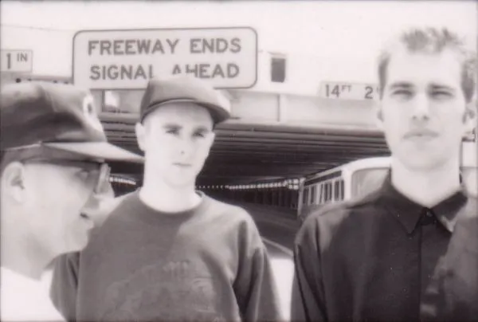

El minimal techno es techno de Detroit.
Minimal techno is Detroit techno.
Fue liderado por los productores de la "segunda ola de techno" de Detroit a principios de los 90.
It was led by Detroit's "second wave of techno" producers in the early 90s.
Para los 90, el techno se había convertido en un término vulgar. La reacción natural de los puristas de Detroit fue distanciarse de este llamado sonido "Techno" que estaba causando furia en toda Europa (que en realidad no era Techno pero así lo llamaban todos).
By the 90s, techno had become a dirty word. The natural reaction from Detroit purists was to distance themselves from this so-called "Techno" sound that was causing a stir all over Europe (which wasn't really Techno, but that's what everyone called it).

El techno minimalista se ha erigido como el guardián de todo lo que es techno real, verdadero o aceptable.Minimal techno set itself up as the gatekeeper of everything that counts as real, true, or acceptable techno.
Irónicamente, los creadores del sonido Minimal Detroit Techno en realidad no eran de Detroit sino que eran tres blancos de Canadá (Ritchie Hawtin , John Acquaviva y Dan Bell) que tuvieron que demostrar a la fraternidad insular del Techno negro que ellos y su sello Plus 8 no solo pertenecían sino que en realidad eran más Detroit que esos tipos del Techno original.
Ironically, the creators of the Minimal Detroit Techno sound weren't actually from Detroit — they were three white guys from Canada (Ritchie Hawtin , John Acquaviva and Dan Bell) who had to prove to the insular Black Techno fraternity that they and their label Plus 8 not only belonged, but were actually more Detroit than the original Techno guys.
El minimal techno es un género de batalla. Las canciones son cortas, rara vez etiquetadas y están pensadas principalmente para mezclar, no para escucharse individualmente. A los DJ les gusta hacer faderslams cada 32 compases (o lo más rápido que se necesite para impresionar) o combinar diferentes pistas para crear nuevas composiciones.
Minimal techno is a battle genre. Tracks are short, rarely labeled, and mostly meant for mixing, not for standalone listening. DJs like to throw down faderslams every 32 bars (or as fast as needed to impress) or blend different tracks together to create new compositions.